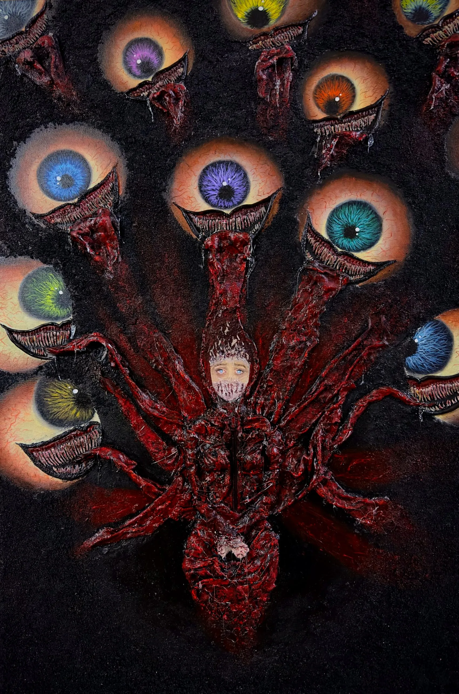
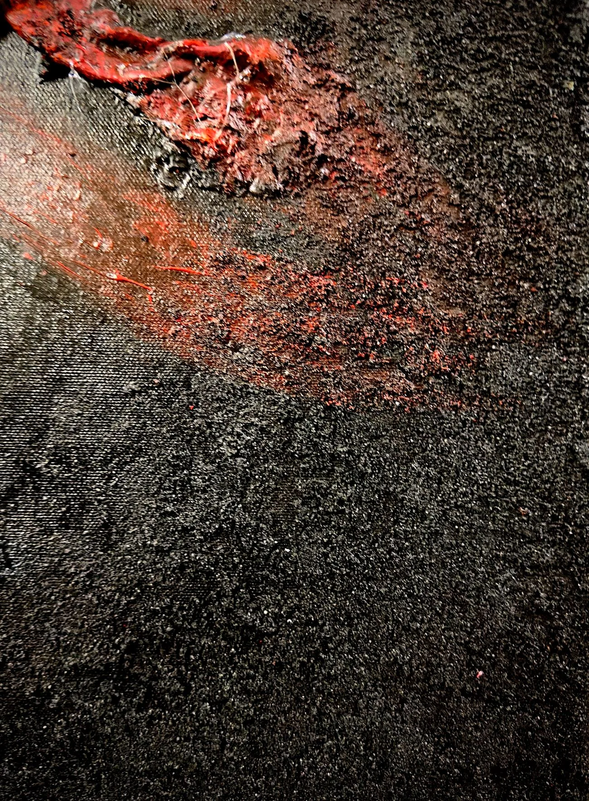
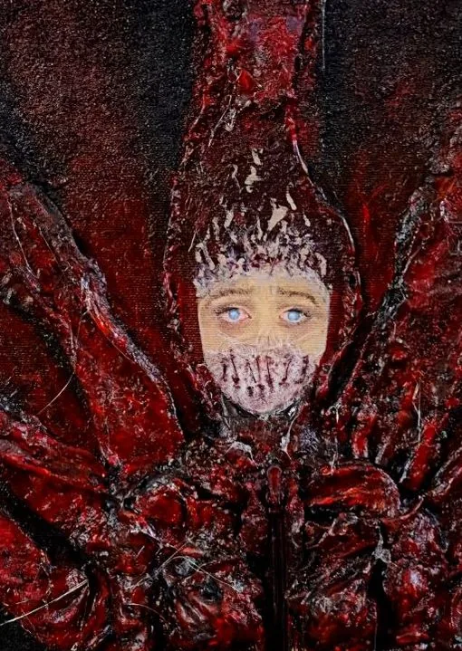
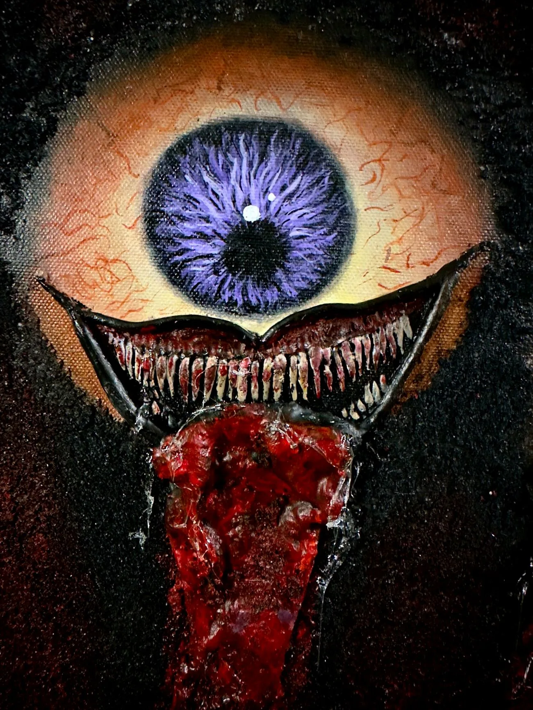
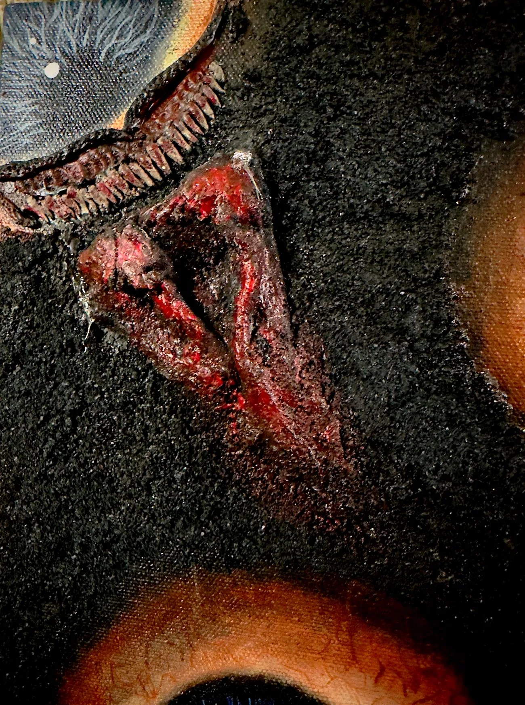
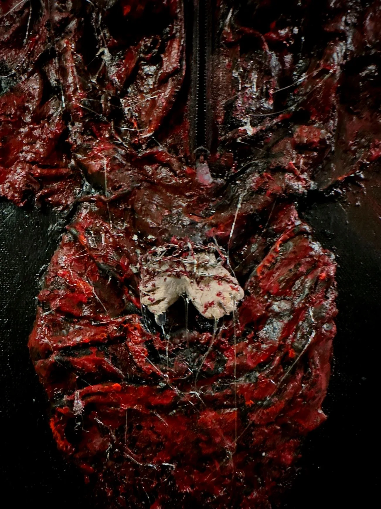
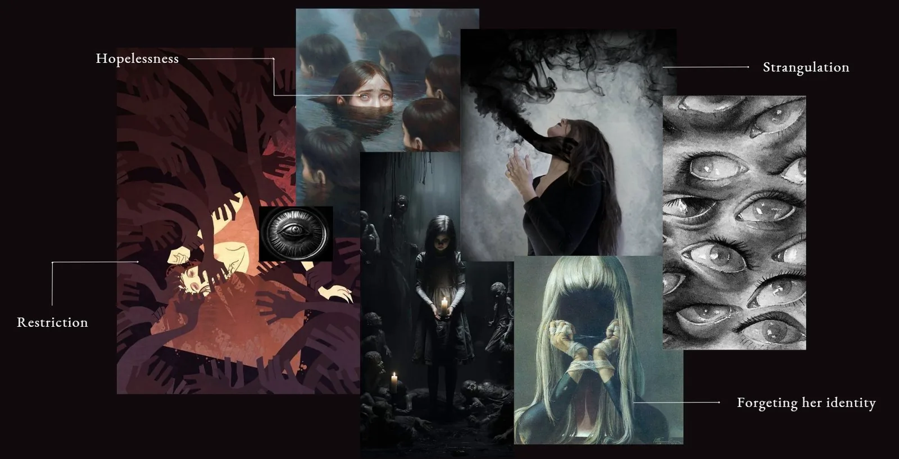
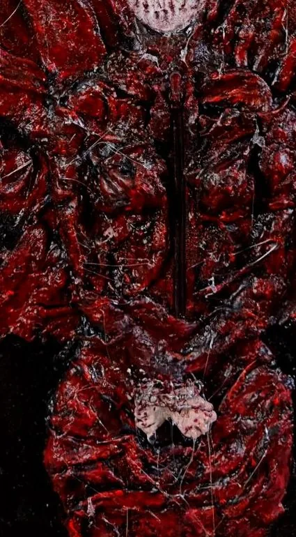
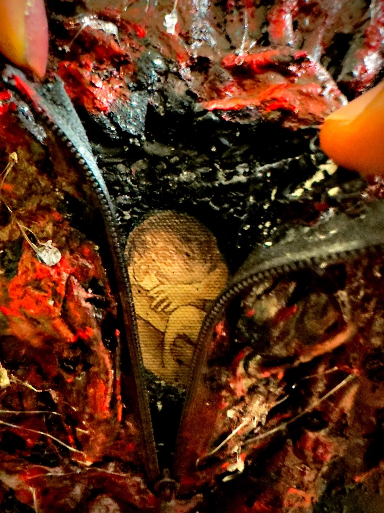

Sewn Into Silence
They are all watching. Hold still.
Now scroll, and open her up.
Synopsis


They are all watching. Hold still.
Now scroll, and open her up.

The one they look at
She is kind-hearted, and that is exactly what the world punishes.
Society judges her for everything she does. Vulgar words land on a tender heart, and she stands there terrified and in shock.
When she finally confides in her loved ones, they forbid her from telling anyone else, afraid of the shame it would bring the family. With no one left to tell, she slowly accepts what society says about her, and loses her true self.

The eyeball
How society looks at women: every eye with a motive of its own, every one of them grinning.

The tongue
The vulgar words society speaks. They uncoil from the grinning mouths, reach her and strangle her.
The stitched mouth
Stitches keep her from expressing what she feels. Above them, her head is flaking away, slowly dissolving into the words of society.

The barbed wire
Her hands are out, reaching. Still, they are tied by the restrictions society sets on her.



The zip
She looks like an adult. Inside, she is still a child, waiting to be saved.